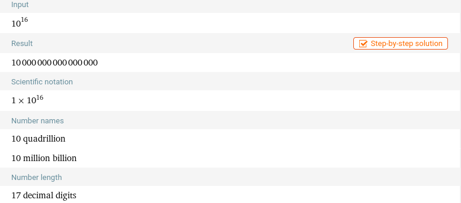
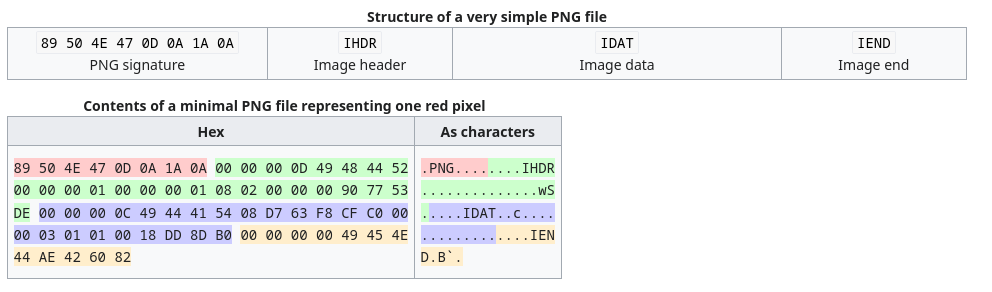
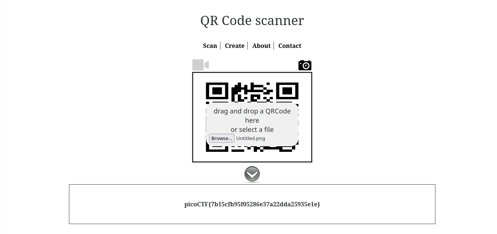

#
Java Script Kiddie Writeup
Author: John Johnson
Description
The image link appears broken... https://jupiter.challenges.picoctf.org/problem/58112 or http://jupiter.challenges.picoctf.org:58112A new day, A new challenge to break into. Today I will be showing you how to solve the Java Script Kiddie from PicoCTF '19. Logging into the challenge we get a simple text field to enter text. When we try to enter anything into it we can see that a broken png appears below it. Looking at the pages source code using ctrl+u we can clearly see that there is some logic that we need to reverse enginner and understand.
#
Understanding Javascript
var bytes = [];
$.get("bytes", function(resp) {
bytes = Array.from(resp.split(" "), x => Number(x));
});
function assemble_png(u_in){
var LEN = 16;
var key = "0000000000000000";
var shifter;
if(u_in.length == LEN){
key = u_in;
}
var result = [];
for(var i = 0; i < LEN; i++){
shifter = key.charCodeAt(i) - 48;
for(var j = 0; j < (bytes.length / LEN); j ++){
result[(j * LEN) + i] = bytes[(((j + shifter) * LEN) % bytes.length) + i]
}
}
while(result[result.length-1] == 0){
result = result.slice(0,result.length-1);
}
document.getElementById("Area").src = "data:image/png;base64," + btoa(String.fromCharCode.apply(null, new Uint8Array(result)));
return false;
}We both will go through the code line by line and understand what does everything mean here.
var bytes = [];
$.get("bytes", function(resp) {
bytes = Array.from(resp.split(" "), x => Number(x));
});This code snippet begins by initialising an array called bytes and it is used to store the data retrived from the /bytes endpoint, split the array and convert each element into an array..
The assemble_png(u_in) contains the core logic. Here, It takes the user input from the previous textbox as an argument and some variables are initialised suck as LEN, key and shifter. The code next verifies if the u_in's lenght is equal to 16, if it is then it will update the key value with the u_in otherwise it will remain default i.e. 0000000000000000. Inside the function there is a for loop that iterates through each charecter in the key and for every charecter of the key, a shifter value is is calculated based on the ASCII code of the charecter minus 48. This is crucial as this allows us to find the offset in the byte arrays.
Another loop processes the chunk of bytes obtained from the server, The offset is adjusted based on the shifter value, creating room for PNG assembly and then finally renders that PNG, after removing the trailing zeros.
This questions the point that we need to bruteforce (10)^6 possible combinations. This would take an eternity to bruteforce and impractical, then we find a way to do it without the need of extensive bruteforcing.
#
PNG Crash Course
A PNG stands for Portable Network Graphics. It is a file format which allows lossless data compression. PNG supports palette-based images (with palettes of 24-bit RGB or 32-bit RGBA colors), grayscale images (with or without an alpha channel for transparency), and full-color non-palette-based RGB or RGBA images. The PNG working group designed the format for transferring images on the Internet, not for professional-quality print graphics; therefore, non-RGB color spaces such as CMYK are not supported. A PNG file contains a single image in an extensible structure of chunks, encoding the basic pixels and other information such as textual comments and integrity checks documented in RFC 2083.
PNG files have the ".png" file extension and the "image/png" MIME media type. PNG was published as an informational RFC 2083 in March 1997 and as an ISO/IEC 15948 standard in 2004.
But the intresting part that we require for this challenge is the PNG header also known as the PNG Signature. The image is broken becaue the header is shifted (let's call this corrupted header) using a key and we need to find the key that would let us get the header back in correct position so the image can be displayed correctly.


So, the expected header is 89 50 4E 47 0D 0A 1A 0A 00 00 00 0D 49 48 44 52
#
Building a Bruteforcer
So, We need to write a python script that would iterate through each byte in bytes endpoint and tries to iterate through every shift value and match the corrupted header to the expected header and then we can save the the value of each shifter when they both match and construct some valid keys.
import itertools
import os
def find_key(expected_header, bytes_data):
KEY_LEN = len(expected_header)
shifters = [[] for _ in range(KEY_LEN)] # A list to store the possible keys.
for i in range(KEY_LEN):
for shifter in range(10): # So, we can iterate through (0-9)
j = 0
offset = (((j + shifter) * KEY_LEN) % len(bytes_data)) + i # Calculate the offset based on the shifter and current position in the key
if bytes_data[offset] == expected_header[i]:
shifters[i].append(shifter)
for p in itertools.product(*shifters): # Iterating through all possible combinations of shift values for each pos.
key = "".join(map(str, p))
print("[!] Valid Key:", key)
def main():
os.system("curl -L http://jupiter.challenges.picoctf.org:58112/bytes -o bytes > /dev/null 2>&1") # Getting the bytes freshly from the website (if you are onwindows you can just comment this line and get your own bytes file)
expected_header = [0x89, 0x50, 0x4E, 0x47, 0x0D, 0x0A, 0x1A, 0x0A, 0x00, 0x00, 0x00, 0x0D, 0x49, 0x48, 0x44, 0x52]
with open("bytes") as f:
bytes_data = list(map(int, f.read().split(" ")))
find_key(expected_header, bytes_data)
if __name__ == "__main__":
main()The script iterates through possible key combinations, aligning the bytes to reconstruct the PNG header until a match with the expected header is found.
(venv) [giraffe@arch python]$ python3 chall.py
[!] Valid Key: 4894748485167104
[!] Valid Key: 4894748485267104
[!] Valid Key: 4894748486167104
[!] Valid Key: 4894748486267104
Running the script yeilds us only 4 possible keys for the header and then we can manually test those 4 keys in the input. After trying all the four valid keys, one of the keys should assemble correctly into a QR code, which upon scanning will give us the final flag.

You can follow me on twitter: @Goofygiraffe06